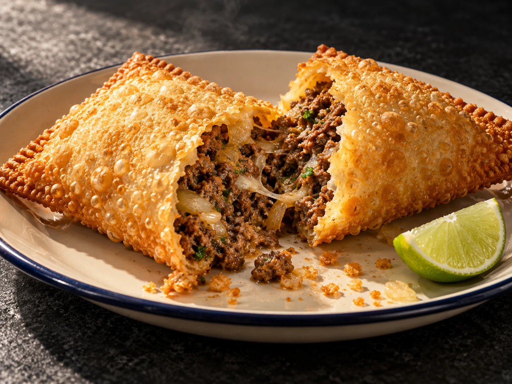

Queijo & encontro
O clássico ganha uma apresentação rápida de entender.
O pastel é simples, direto e cheio de memória. A experiência digital pode ser assim também — com mais cor, apetite e personalidade.
Ver ideias de cardápioUma pastelaria pode mostrar o cardápio, contar sua história e facilitar o caminho até o balcão. Nesta demo, o movimento do pastel acompanha a rolagem para dar vida ao produto sem atrapalhar a leitura.

Massa dourada: o primeiro encontro com a crocância.
Uma boa página resolve o básico com personalidade. Informações reais de funcionamento, localização e contato entram na versão personalizada.
Conceito fictício criado para o portfólio ServAgency.
Conhecer a ServAgency